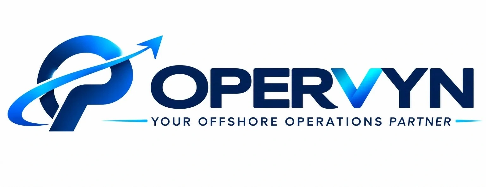

Administrative assistance
Organizing information, maintaining records, preparing documents and following established procedures.

OPERVYN provides task-based remote assistance for businesses that need help with routine administrative and operational activities. You define the tasks, tools, priorities and procedures; the assigned agent follows the agreed workflow.
Organizing information, maintaining records, preparing documents and following established procedures.
Organizing inboxes, sorting messages, preparing draft responses or flagging items according to client-defined rules.
Gathering information from specified sources and preparing structured summaries or spreadsheets.
Organizing digital documents, updating records and maintaining agreed naming conventions.